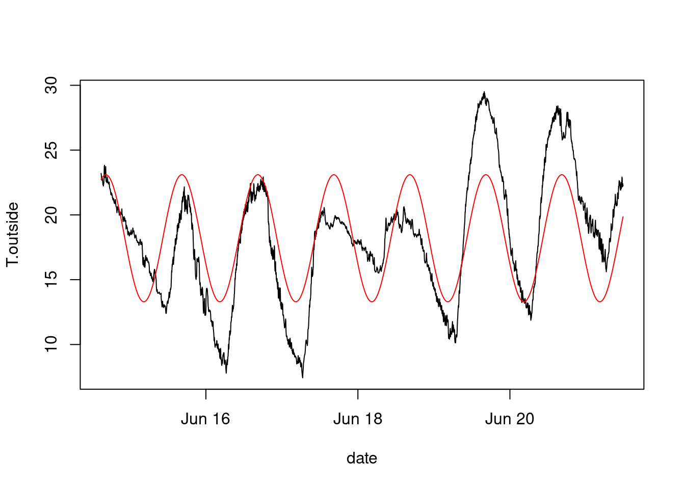
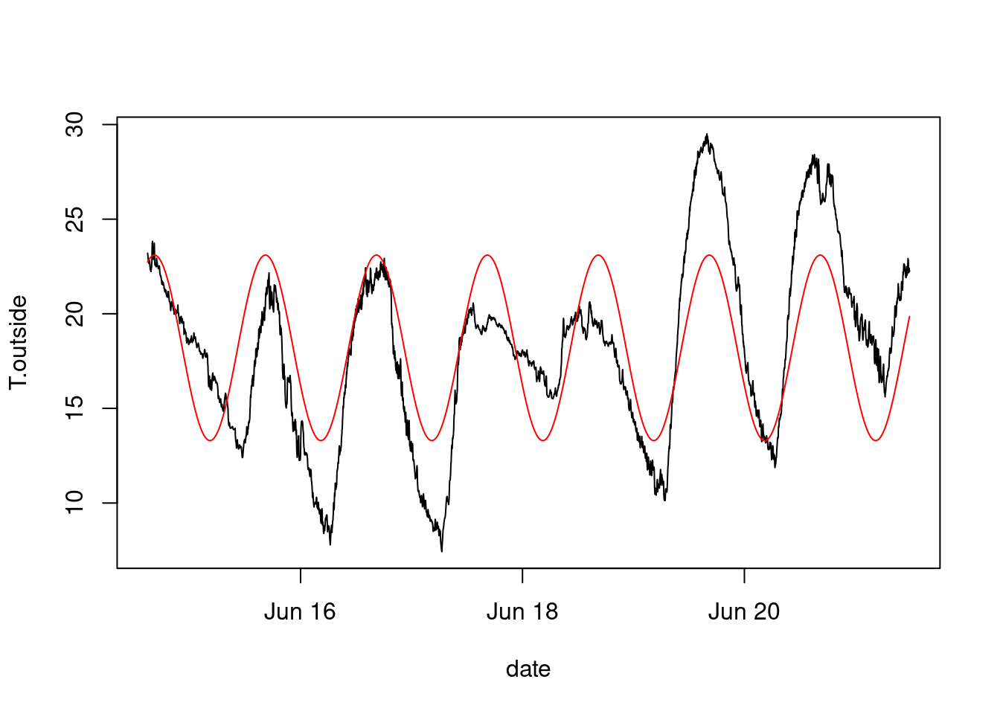
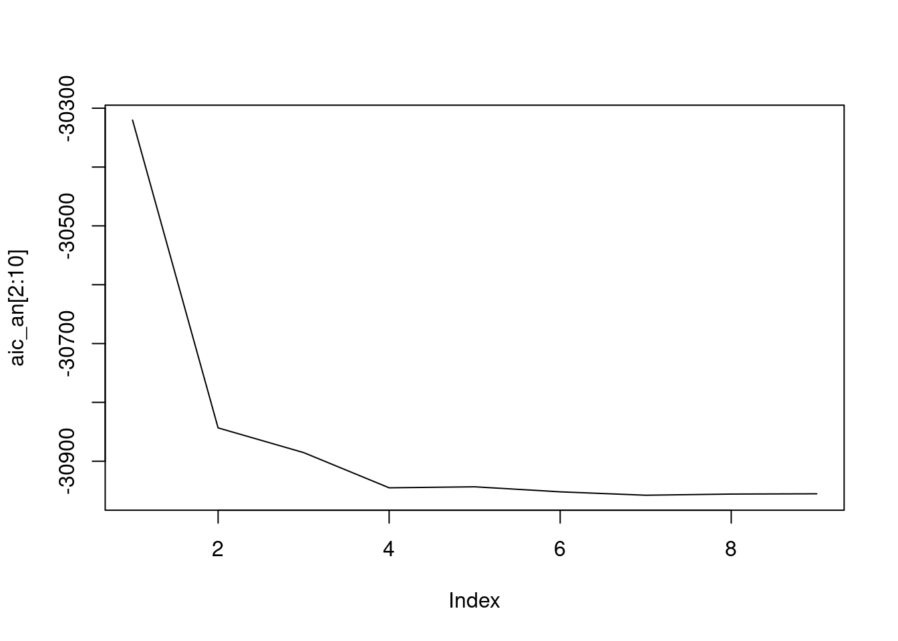
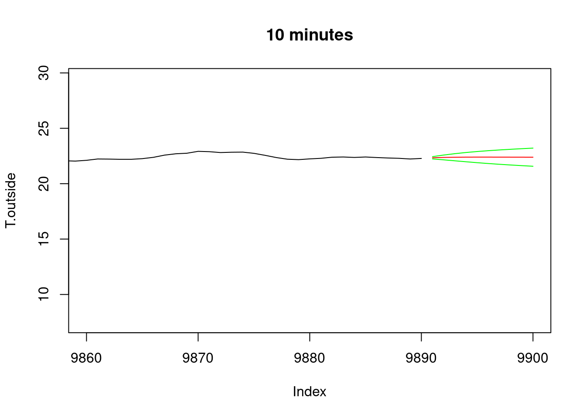
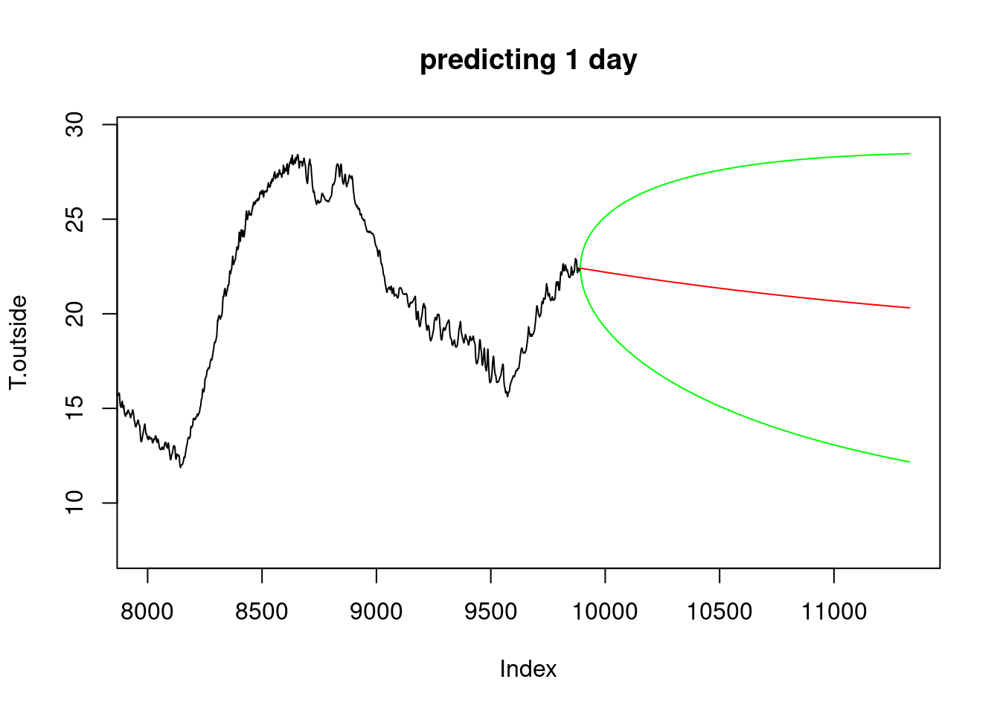
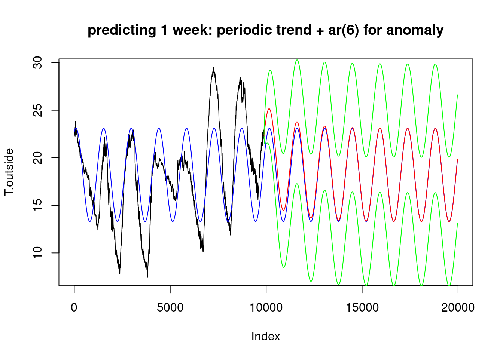
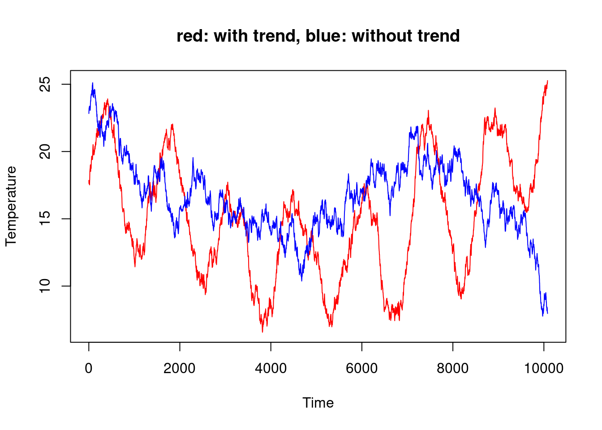

load("meteo.RData")
# plot data and trend:
plot(T.outside~date,meteo,type='l')
meteo$T.per = 18.2-4.9*sin(pi*(meteo$hours+1.6)/12)
lines(T.per~date,meteo,col='red')
load("meteo.RData")
# plot data and trend:
plot(T.outside~date,meteo,type='l')
meteo$T.per = 18.2-4.9*sin(pi*(meteo$hours+1.6)/12)
lines(T.per~date,meteo,col='red')
Assuming this is a sinus function, \[\alpha_1 + \alpha_2 \sin(t + \alpha_3),\] we need non-linear regression (\(\alpha_3\))
attach(meteo)
# The following object is masked from package:datasets:
#
# pressure
f = function(x) {
sum((T.outside - (x[1] + x[2] * sin(pi * (hours + x[3])/12)))^2)
}
nlm(f, c(0, 0, 0)) # zero initial values
# $minimum
# [1] 108956
#
# $estimate
# [1] 18.2 -4.9 1.6
#
# $gradient
# [1] -1.60e-06 -8.90e-05 2.18e-04
#
# $code
# [1] 1
#
# $iterations
# [1] 9We attached meteo so we can use variable names directly: f has acces to T.outside and hours, without needing them to be passed as arguments (lexical scoping). Without attaching, that would not work.
In the next part on optimization we will see what nlm does.
plot(T.outside-T.per~date, meteo, type='l')
title("anomaly")
A possible approach is to find the minimum for Akaike’s Information Criterion (AIC) for ARMA(\(p,q\)) models and series of length \(n\): \[AIC = \log \hat{\sigma}^2 + 2(p+q+1)/n\] with \(\hat{\sigma}^2\) the estimated residual (noise) variance.
Instead of finding a single best model using this single criterion, it may be better is to select a small group of “best” models, and look at model diagnostics for each: is the residual white noise? does it have stationary variance?
Even better may be to keep a number of “fit” models and consider each as (equally?) suitable candidates.
n = 10
aic = numeric(n)
for (i in 1:n)
aic[i] = arima(T.outside, c(i,0,0))$aic # AR(i)
aic
# [1] -23548 -30235 -30714 -30772 -30815 -30816 -30818 -30818 -30818
# [10] -30816
plot(aic[2:10], type='l')
an = T.outside - T.per
aic_an = numeric(n)
for (i in 1:n)
aic_an[i] = arima(an,c(i,0,0))$aic # AR(i)
aic_an
# [1] -23995 -30320 -30843 -30885 -30945 -30944 -30952 -30958 -30956
# [10] -30955
plot(aic_an[2:10], type='l')
# Prediction, e.g. with AR(6)
x = arima(T.outside, c(6,0,0))
pltpred = function(xlim, Title) {
plot(T.outside, xlim = xlim, type='l')
start = nrow(meteo) + 1
pr = predict(x, n.ahead = xlim[2] - start + 1)
lines(start:xlim[2], pr$pred, col='red')
lines(start:xlim[2], pr$pred+2*pr$se, col='green')
lines(start:xlim[2], pr$pred-2*pr$se, col='green')
title(Title)
}
pltpred(c(9860, 9900), "10 minutes")
pltpred(c(9400, 10000), "110 minutes")
pltpred(c(8000, 11330), "predicting 1 day")
pltpred(c(1, 19970), "predicting 1 week")
plot(T.outside,xlim=c(1,19970), type='l')
x.an = arima(an, c(6,0,0)) # model the anomaly by AR(6)
x.pr = as.numeric(predict(x.an, 10080)$pred)
x.se = as.numeric(predict(x.an, 10080)$se)
hours.all = c(meteo$hours, max(meteo$hours) + (1:10080)/60)
T.per = 18.2-4.9*sin(pi*(hours.all+1.6)/12)
lines(T.per, col = 'blue')
hours.pr = c(max(meteo$hours) + (1:10080)/60)
T.pr = 18.2-4.9*sin(pi*(hours.pr+1.6)/12)
lines(9891:19970, T.pr+x.pr, col='red')
lines(9891:19970, T.pr+x.pr+2*x.se, col='green')
lines(9891:19970, T.pr+x.pr-2*x.se, col='green')
title("predicting 1 week: periodic trend + ar(6) for anomaly")
x = arima(T.outside, c(6,0,0))
plot(T.pr + arima.sim(list(ar = x.an$coef[1:6]), 10080, sd = sqrt(0.002556)),
col = 'red', ylab="Temperature")
lines(18+arima.sim(list(ar = x$coef[1:6]), 10080, sd=sqrt(0.002589)),
col = 'blue')
title("red: with trend, blue: without trend")
Prediction/forecasting:
A phase shift model \(\alpha \sin(x + \phi)\) can also be modelled by
\(\alpha sin(x) + \beta cos(x)\); this is essentially a re-parameterization. Try the following code:
x = seq(0, 4*pi, length.out = 200) # x plotting range
f = function(dir, x) { # plot the combination of a sin+cos function, based on dir
a = sin(dir)
b = cos(dir)
# three curves:
plot(a * sin(x) + b * cos(x) ~ x, type = 'l', asp=1, col = 'green')
lines(x, a * sin(x), col = 'red')
lines(x, b * cos(x), col = 'blue')
# legend:
lines(c(10, 10+a), c(2,2), col = 'red')
lines(c(10, 10), c(2,2+b), col = 'blue')
arrows(x0 = 10, x1 = 10+a, y0 = 2, y1 = 2+b, .1, col = 'green')
title("red: sin(x), blue: cos(x), green: sum")
}
for (d in seq(0, 2*pi, length.out = 100)) {
f(d, x)
Sys.sleep(.1)
}So, we can fit the same model by a different parameterization:
nlm(f,c(0,0,0))$minimum
# [1] 108956
tt = pi * hours / 12
g = function(x) sum((T.outside - (x[1]+x[2]*sin(tt)+x[3]*cos(tt)))^2)
nlm(g,c(0,0,0))
# $minimum
# [1] 108956
#
# $estimate
# [1] 18.19 -4.48 -2.00
#
# $gradient
# [1] -0.00033 -0.00241 -0.00124
#
# $code
# [1] 1
#
# $iterations
# [1] 5which is a linear model, identical to:
lm(T.outside~sin(tt)+cos(tt))
#
# Call:
# lm(formula = T.outside ~ sin(tt) + cos(tt))
#
# Coefficients:
# (Intercept) sin(tt) cos(tt)
# 18.19 -4.48 -2.00